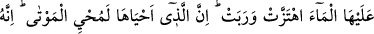

KUR’AN BİR KILAVUZ
VE ŞİFÂDIR
37. Gece ve gündüz, güneş ve ay O’nun âyetlerindendir. Eğer Allah’a ibâdet
etmek istiyorsanız, güneşe de aya da secde etmeyin. Onları yaratan Allah’a secde
edin!
38. Eğer insanlar büyüklük taslarlarsa (bilsinler ki) Rabbinin yanında bulunan
(melekler) hiç usanmadan, gece gündüz O’nu tesbih ederler.
39. Senin yeryüzünü kupkuru görmen de Allah’ın âyetlerindendir. Biz onun
üzerine suyu indirdiğimiz zaman, harekete geçip kabarır. Ona can veren, elbette
ölüleri de diriltir. O, her şeye kâdirdir.
40. Âyetlerimiz hakkında doğruluktan ayrılıp eğriliğe sapanlar bize gizli kalmaz.
O halde, ateşin içine atılan mı daha iyidir, yoksa kıyâmet günü güvenle gelen mi?
Dilediğinizi yapın! Kuşkusuz O, yaptıklarınızı görmektedir.
41. Kendilerine Kitap geldiğinde onu inkâr edenler (şüphesiz bunun sonucuna